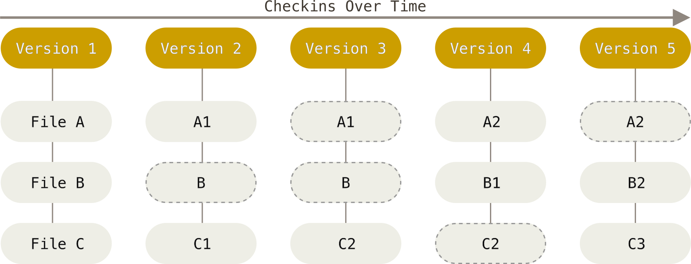
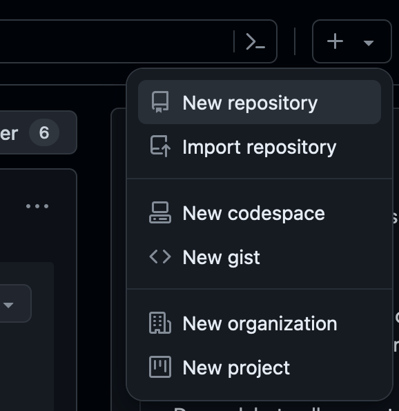
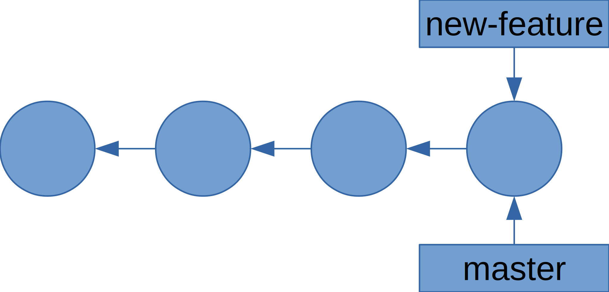
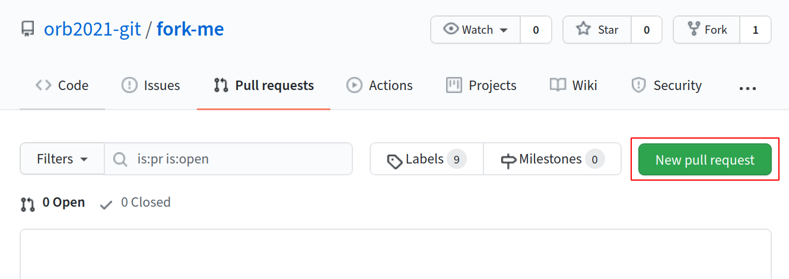
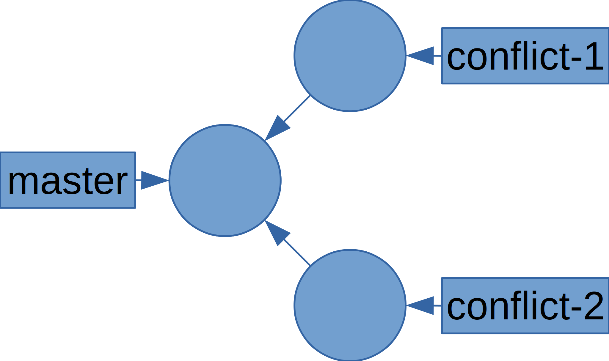
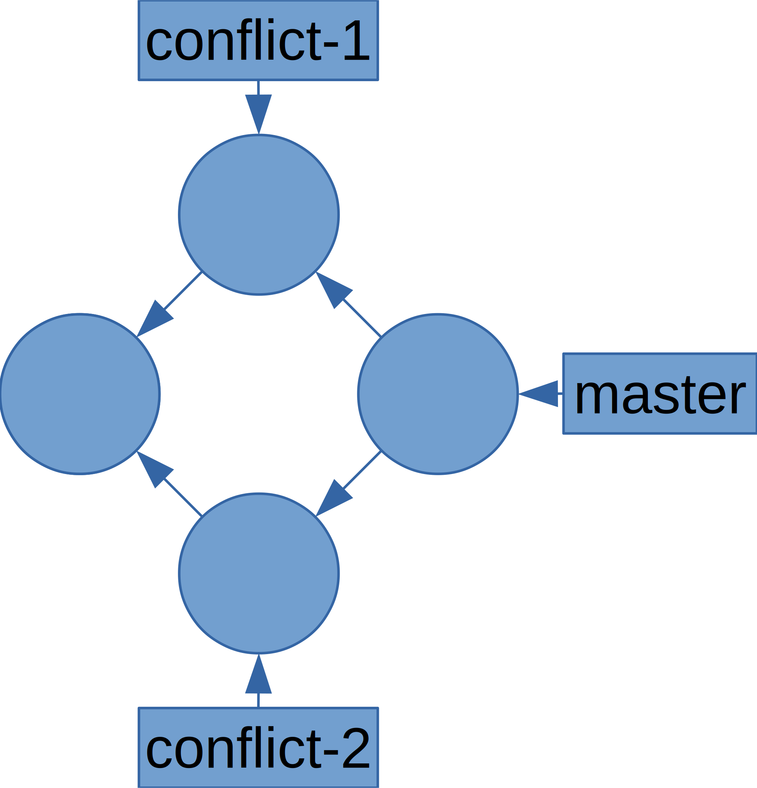
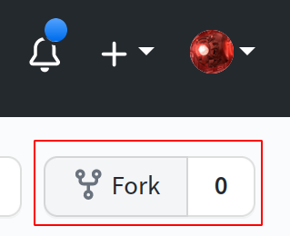
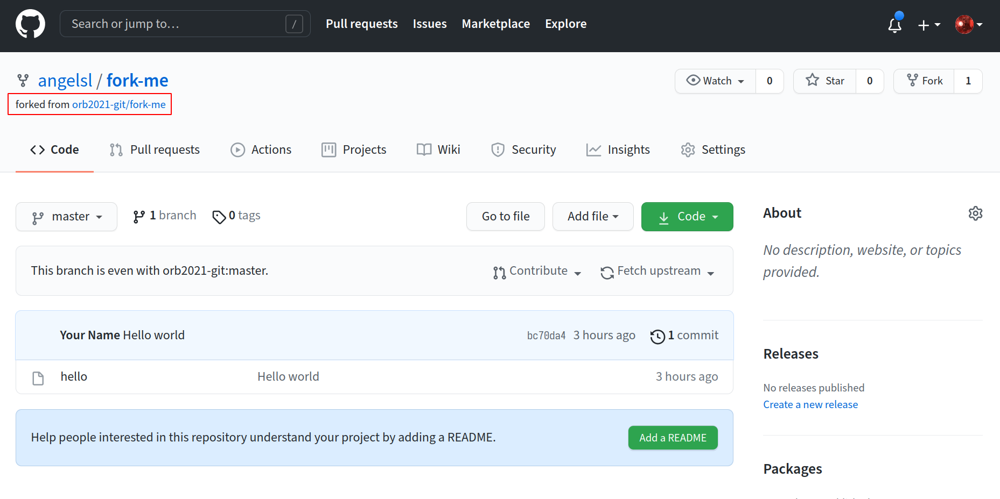
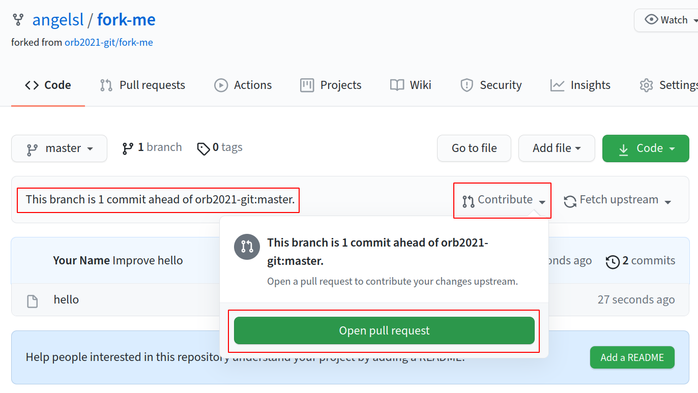
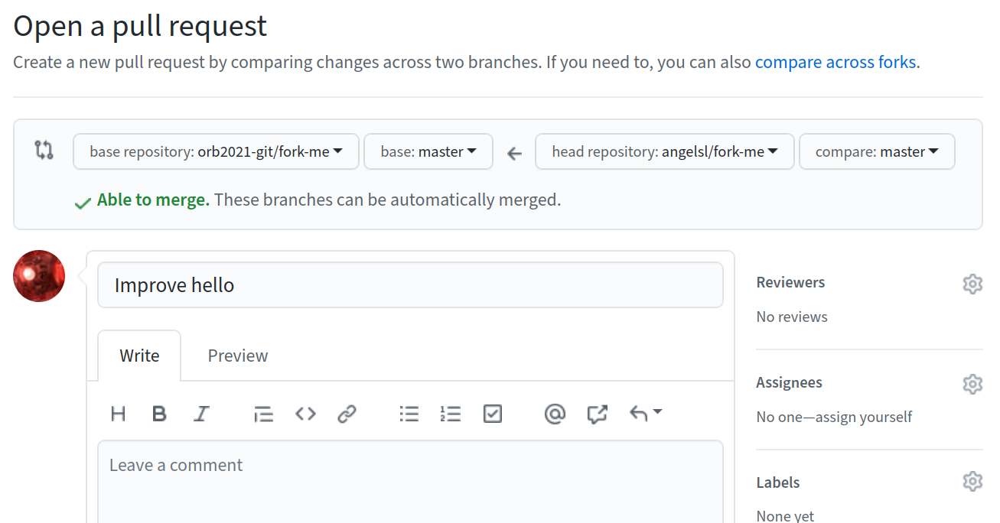

Introduction to Git (and GitHub)

7th March, 2023
Slides
https://hckr.cc/ht-git-slides
Things you need
What is version control and why should you care?
- A version control system (VCS) helps to record changes to a file or a set of files over time
- It allows you to revert a project to a previous state, or to compare changes over time
- Acts as an “undo” button for your code and lets your collaborate with your team
What is Git?
- Created by Linus Torvalds in 2005 as a replacement for existing VCS for the Linux kernel
- A distributed version control system (DVCS)
- Every commit is a snapshot of your files
- GitHub != Git

The three "areas"
- Working directory: where you actually work
- Index/"staging" area: where you construct a commit
- Repository/commit: the repository itself

Getting started
In each commit, Git stores the author and committer's name and email
You need to configure Git:
git config --global user.name "Your Name"
git config --global user.email "your@email.com"Now, we will create a new repository for this session.
Creating a new GitHub repository
Creating a new GitHub repository

Creating a new GitHub repository

Cloning the repository
Downloading a local copy of the repository
The server (i.e. GitHub) stores the remote copy (like a single source of truth)
Setting your editor
Git sometimes launches an editor e.g. when you commit,
to edit the commit message
Configure your favourite editor:
git config --global core.editor nano
git config --global core.editor emacs
# VS Code
git config --global core.editor "code --wait --new-window"
# For Windows
git config --global core.editor "'C:/Program Files/Notepad++/notepad++.exe' -multiInst -nosession"
git config --global core.editor "'C:/Program Files/Microsoft VS Code/code.exe' -n -w"Initialising a repository
Let's create a new Git repository.
$ mkdir my-git-repo
$ cd my-git-repo
$ git initInitialized empty Git repository in my-git-repo/.git/Stage a file
Create a new file in hello.txt, however you want. Then
add it:
$ echo 'Hello world' > hello.txt
$ git add hello.txtStaging tells Git that you want to include the file in your next snapshot.
Check the status
We've just staged a file! So what is the state of the repository?
$ git statusOn branch master
No commits yet
Changes to be committed:
(use "git rm --cached <file>..." to unstage)
new file: helloMake your first commit
Committing files is taking the snapshot of the files that have been staged.
$ git commit -m "Add hello"[master (root-commit) 5d74ce3] Add hello
1 file changed, 1 insertion(+)
create mode 100644 helloYou can leave the -m ... part out. Git will open your
editor for you to compose a commit message.
Make some changes, and look at them
Make edits to hello.txt (or whatever file you made),
then
$ git diffdiff --git a/hello b/hello
index 802992c..5d56d4d 100644
--- a/hello
+++ b/hello
@@ -1 +1 @@
-Hello world
+Hello Hackerschool!git diff shows the changes to file content.
Viewing commit history
$ git logcommit 19c32155172a20f2fd14fe0e6c0fea954c17296b (HEAD -> master)
Author: Your Name <your@email.com>
Date: Sat May 8 21:36:58 2021 +0800
Change world to Hackerschool!
commit dc37b1cb2627f9829db0072cfa7d3d6bf9eb6822
Author: Your Name <your@email.com>
Date: Sat May 8 21:16:45 2021 +0800
Add helloSummary so far
git init: Initialise repositorygit add: Stage changesgit diff(--staged): Look at differences between working tree and index (--staged: index and current commit)git status: Look at repository statusgit commit(-m): Commit staged changes (-m: with this commit message)git show: Show current commitgit log: View the log.gitignore: Ignore files
The commands' manuals are linked. (They all have many more options than what we've covered.)
Intermission
5 minutes…
In the meantime, try out the commands that you have learnt! Add new files, edit them, commit them, and stage them!
Collaborating with others
Collaboration Workflows
- Branch & PR
- Fork & PR
This workshop focuses on the former - “Branch & PR”
For more information about “Fork & PR”, you can visit this link here
What is a branch?
A branch is an independent line of development, often used for features or bug fixes that should not be directly and immediately saved onto the main branch

Main branch is the initial and primary place where most development
occurs (main is traditionally used but can be named
anything, used to be known as master branch)
HEAD
HEAD is a special name given to the current commit of
your current branch for ease of reference
:::

:::
Why use branching?
- work on different versions of our code simultaneously. Think of branches as alternative timelines.
- create separate contexts where we can try new things or even work on multiple ideas in parallel without risking the codebase.
- if feature A and feature B are being developed, if A breaks, it doesn’t affect B.
Creating a branch
$ git checkout -b new-feature
Switched to a new branch 'new-feature'Alternatively:
$ git branch new-feature
$ git checkout new-feature
Switched to branch 'new-feature'Creating a branch

Listing branches
$ git branch
main
* new-featureChanging branches
$ git checkout main
Switched to branch 'main'Branch & PR Workflow
Each member owns their copy of the repository locally (through cloning)
When working on a new feature or bug fix, each member will
- Pull the latest changes from the remote repository
- Create a branch per feature/bug fix on their local copy
- Edit the files in their respective branch
- Push their local branch to the repository
- Make a pull request of their feature/bug fix branch to the
mainbranch (remote copy)
Hands-on Time!
Setup
Add your teammate as a collaborator to your newly created GitHub repository (Settings > Manage access > Invite a collaborator)

Clone their repository onto your machine (name it something different from your own):
$ git clone https://github.com/<your teammate's GitHub name>/my-new-repo.git my-friend-repo/
$ cd my-friend-repo/Creating a branch
$ git checkout -b feature-1Making your changes
Edit your friend’s hello.txt to have whatever content
you want and then stage and commit the file:
$ git add hello.txt
$ git commit -m "Update hello.txt"Pushing local changes to the remote repository
$ git push origin feature-1Opening a pull request on the repository
Repository page > Pull Requests > New pull request

Creating pull request
Ensure that the compare branch is your local feature
branch and base branch is main branch

Creating pull request
Confirm pull request with “Create pull request”

Reviewing pull requests
Your repository > Pull Requests > Select your friend’s pull request

View the commits and the files changed through the tabs.
Accepting pull requests
If the files are in order, click “Merge pull request” to accept their
changes into your repository’s main branch
Getting latest remote copy on your local copy
git pull origin mainMerging
Combining your branch to main branch

Handling (merge) conflicts
Merge conflicts arise when the same line of code is changed across two commits so there is a conflict in which to be used
Simulating merge conflicts
In your repository, create branch conflict-1 from
main and edit the first line of hello.txt
$ git checkout -b conflict-1Return to main and create another branch
conflict-2 from main and edit the first line
of hello.txt again
$ git checkout main
$ git checkout -b conflict-2Merge conflicts

Merge conflicts
Now, try to merge conflict-1 and conflict-2
into main.
$ git merge conflict-1
Updating b53e9cf..87a92c3
Fast-forward
hello.txt | 2 +-
1 file changed, 1 insertion(+), 1 deletion(-)
$ git merge conflict-2
Auto-merging hello.txt
CONFLICT (content): Merge conflict in hello.txt
Automatic merge failed; fix conflicts and then commit the result.Handling merge conflicts
$ git status
On branch master
Your branch is ahead of 'origin/master' by 1 commit.
(use "git push" to publish your local commits)
You have unmerged paths.
(fix conflicts and run "git commit")
(use "git merge --abort" to abort the merge)
Unmerged paths:
(use "git add <file>..." to mark resolution)
both modified: hello.txt
no changes added to commit (use "git add" and/or "git commit -a")Handling merge conflicts
$ cat hello.txt
<<<<<<< HEAD
Goodbye!
=======
Farewell!
>>>>>>> conflict-2What we have in main
What we want to merge in
conflict-2
Handling merge conflicts
Edit hello.txt as such…
Handling merge conflicts

Summary
git checkout: Checkout a branch (and also files, etc)git merge: Merge a branchgit clone: Clone a remote repositorygit remote: Manage remotesgit push: Push your branch to a remotegit pull: Pull updates from a remote to your repository
Intermission!
5 minute break and Q&A!
Additional Notes
HTTPS vs SSH
It doesn't really matter.
Use HTTPS if you don't have an SSH key set up with GitHub, or if it is a repository that you cannot write to.
Use SSH if you have an SSH key set up, and you can write to the repository.
Or it kinda does
Using your GitHub password is no longer allowed after August 13, 2021. If you use HTTPS, you’ll need to create a Personal Access Token (PAT).
In your GitHub account, go to
Settings > Developer Settings > Personal Access Token
to generate one.
Or does it?
Some enteprise network/universities may block SSH connections. However, you can try using SSH over HTTPS port (443).
$ ssh -T -p 443 git@ssh.github.com
> Hi USERNAME! You've successfully authenticated, but GitHub does not
> provide shell access.Or does it?
If you get the success message, you can proceed to set SSH over HTTPS
as a default connection by adding this to your
.ssh/config
Host github.com
Hostname ssh.github.com
Port 443
User gitCommit message discipline
First line: 80-character title, phrased imperatively
Then if your change is complex, elaborate on the change in prose.
Change greeting from "Hi" to "Hello"
"Hi" is a bit too informal for a greeting. We should change it to "Hello" instead,
so that our users don't feel like we are being too informal. Blah blah blah blah.
Blah blah.Forking and PR setup
Clone this repository: fork-me.
$ git clone https://github.com/hackerschool-git/fork-me.git
Cloning into 'fork-me'...
remote: Enumerating objects: 3, done.
remote: Counting objects: 100% (3/3), done.
remote: Total 3 (delta 0), reused 3 (delta 0), pack-reused 0
Unpacking objects: 100% (3/3), done.Forking and PR
You've made some improvements, and now you want it upstreamed!
$ cd fork-me/
$ nano hello # Edit hello
$ git add hello && git commit -m "Improve hello"
[master df48f95] Improve hello
1 file changed, 1 insertion(+), 1 deletion(-)Forking and PR
Fork the repository:

Forking and PR
Get the URL:

Update your repository
Make sure there haven't been new changes made to the upstream.
$ git pull --rebase
Already up to date.We use --rebase because merge commits are generally
frowned-upon in GitHub-style PRs.
Also merge commits will look extremely funky in your PRs.
Forking and PR
Add the remote, and push
$ git remote add fork git@github.com:.../fork-me.git
$ git push fork master
Enumerating objects: 5, done.
Counting objects: 100% (5/5), done.
Writing objects: 100% (3/3), 248 bytes | 248.00 KiB/s, done.
Total 3 (delta 0), reused 0 (delta 0)
To github.com:.../fork-me.git
18cac44..df48f95 master -> masterForking and PR

Forking and PR

Forking and PR

A real commit message
Randomly chosen from the Linux kernel.
net_sched: sch_fq: handle non connected flows
FQ packet scheduler assumed that packets could be classified
based on their owning socket.
This means that if a UDP server uses one UDP socket to send
packets to different destinations, packets all land
in one FQ flow.
This is unfair, since each TCP flow has a unique bucket, meaning
that in case of pressure (fully utilised uplink), TCP flows
have more share of the bandwidth.
If we instead detect unconnected sockets, we can use a stochastic
hash based on the 4-tuple hash.
This also means a QUIC server using one UDP socket will properly
spread the outgoing packets to different buckets, and in-kernel
pacing based on EDT model will no longer risk having big rb-tree on
one flow.
Note that UDP application might provide the skb->hash in an
ancillary message at sendmsg() time to avoid the cost of a dissection
in fq packet scheduler.
Signed-off-by: Eric Dumazet <edumazet@google.com>
Signed-off-by: David S. Miller <davem@davemloft.net>Commit manipulation
Revert
Undo accidental changes made
$ git log --graph --oneline
* d1f4fcc (HEAD -> master, origin/master, origin/HEAD) Add file3
* 643aec6 Update file to c
* 4ec21c7 Update file to b
* 055cab4 Initial commitSuppose we want to revert this commit.
Revert
$ git revert 643aec6
[master 7b73baf] Revert "Update file to c"
1 file changed, 1 insertion(+), 1 deletion(-)
$ git show
commit 7b73baf229e2b8db19bc594c450743b50adf649d (HEAD -> master)
Author: Your Name <your@email.com>
Date: Tue May 11 01:21:31 2021 +0800
Revert "Update file to c"
This reverts commit 643aec6d2a1b4cd485d678886fc1cef25b15bee0.
diff --git a/file b/file
index f2ad6c7..6178079 100644
--- a/file
+++ b/file
@@ -1 +1 @@
-c
+bReset
Undo git add.
$ echo e > file
$ git add file
$ git status
On branch master
Changes to be committed:
(use "git restore --staged <file>..." to unstage)
modified: file
$ git reset file
Unstaged changes after reset:
M file
$ git status
On branch master
Changes not staged for commit:
(use "git add <file>..." to update what will be committed)
(use "git restore <file>..." to discard changes in working directory)
modified: file
no changes added to commit (use "git add" and/or "git commit -a")Checkout
Undo changes to a file in the working tree.
$ echo e > file
$ git status
On branch master
Changes not staged for commit:
(use "git add <file>..." to update what will be committed)
(use "git restore <file>..." to discard changes in working directory)
modified: file
no changes added to commit (use "git add" and/or "git commit -a")
$ git checkout -- file
$ git status
On branch master
nothing to commit, working tree cleanSummary
git revert: Revert a commitgit reset: Unstage filesgit checkout: Checkout files (and also a branch) commitsgit reset(2): Move/"reset" a branch branch
Ignoring files
Sometimes we don't want Git to track a certain file
$ touch ignore-me
$ git statusOn branch master
Untracked files:
(use "git add <file>..." to include in what will be committed)
ignore-me
nothing added to commit but untracked files present (use "git add" to track)Ignoring files
We can add it to .gitignore
$ echo "/ignore-me" >> .gitignore
$ git statusOn branch master
Untracked files:
(use "git add <file>..." to include in what will be committed)
.gitignore
nothing added to commit but untracked files present (use "git add" to track).gitignore should be committed.
Ignoring files
$ git add .gitignore && git commit -m "Add .gitignore"[master 5ada1cf] Add .gitignore
1 file changed, 1 insertion(+)
create mode 100644 .gitignore$ git statusOn branch master
nothing to commit, working tree clean$ git status --ignoredOn branch master
Ignored files:
(use "git add -f <file>..." to include in what will be committed)
ignore-me
nothing to commit, working tree cleanWhat to ignore?
Typically, we ignore files like build artifacts and generated files that are usually derived from the human-authored code in the repository. E.g.
- dependency caches like
/node_modules - compiled code like
.o,.pycfiles - build output directories like
/bin,/out - runtime-generated files like log files
- personal configuration files e.g. of your IDE
.gitignore format
/logs/*/*.log
/logs/**/*.log
**/logs
**/logs/debug.log
*.log
/debug.log
debug.logWhere to go from here?
Additional readings: - Git manual - Pro Git - NUS Hackers Git Cheatsheet - Look into Git workflows - If you’re interested in how version control works with lots of technical details, look into Customizing Git and Git Internals - GitHub isn’t the only way you can share you repositories online! You could even self host your own Git servers. - Why stop at learning? Build your own Git!
Where to go from here?
Check out Hackerschool: Advanced Git
(last run on 7 Nov 2020)
Recording: https://www.youtube.com/watch?v=pGAorBdZ6Y8
Slides: https://hs2010-git.github.io/adv